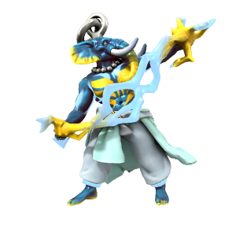

Skyfather

The Skyfather is the essence of the open sky - thunder, lightning, clouds and the air are all His domain. As one of the most powerful and important fey, He features in most pantheons across Iuncterra, going by various names.
To the people of Ordo'Atkan and the pre-elven tribes of Kashar, He is Tenger /tɛŋɡə/. To the people of Drace, He is Oron /ɔrɒn/. To the dwarves of Kaiper, he is Pater Oura /peɪtər oʊrə/. Prior to the establishment of the Uthgardt faith, he was known to the early Human and Iotun of the cold north as Tordensvadr /turdɛnzvɑdə/.
Skyfather takes form on the mortal plane as a Loxodon, the species being created from Orc by His interference to exist in His image. Despite this, most Loxodon now follow the Kasharite faith, worshipping the Eternal Flame of the Kash dynasty.